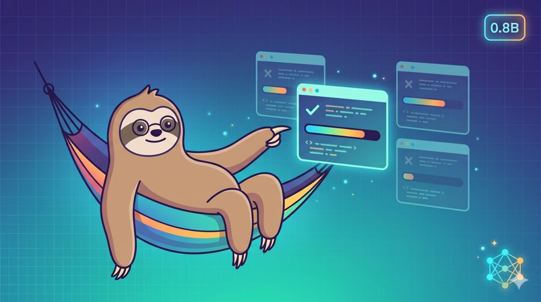
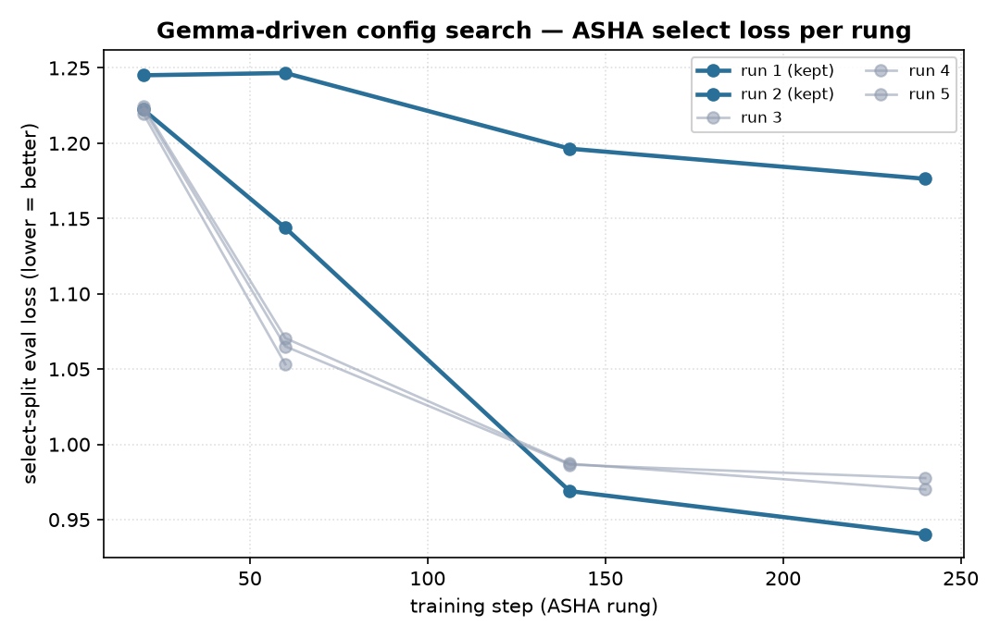
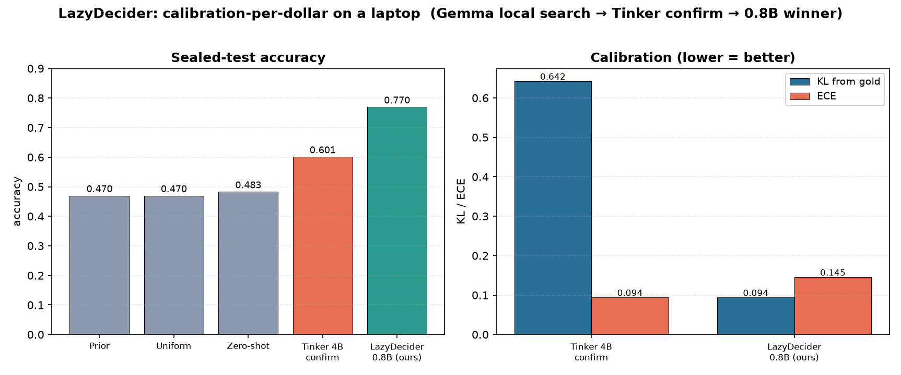

I go to sleep. An open-weight agent fine-tunes a model for me — proposing configs, pruning the losers, and leaving a report by morning. No cloud bill. It all runs on a laptop.

Gemma reads its own history and proposes one config at a time, with a one-line reason. The ASHA pruner trains it, and we keep it only if it beats the best on a frozen split — otherwise revert.


| Model | Role | Accuracy ↑ | KL ↓ | Brier ↓ | ECE ↓ |
|---|
The headline is the KL from gold of 0.094 on a 0.8B model found autonomously, for ~$0, on an 18 GB Mac. Tinker independently confirms a clear lift over zero-shot.
TINKER_* from its env.